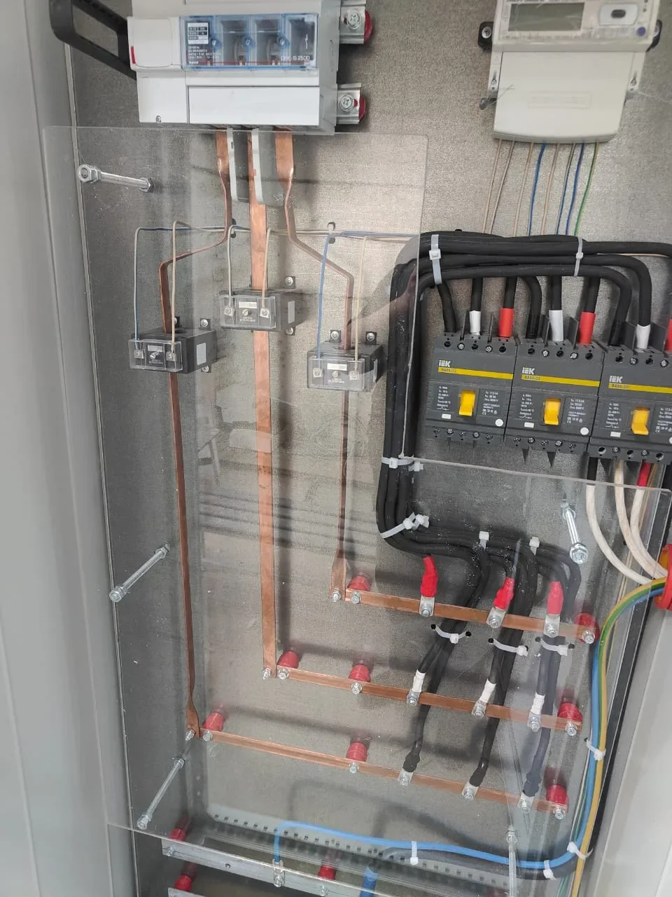

Какие данные нужны для ВРУ?
Нужны вводы, нагрузка, схема учета, отходящие линии, требования проекта и условия установки на объекте.
ВРУ / АВР / ЩУ
Берем щиты, где важны понятная логика схемы, аккуратная сборка, маркировка и удобство дальнейшего обслуживания. Работаем по проекту, ТЗ или помогаем уточнить решение по исходным данным.

Направления
Что важно
Результат
До начала сборки фиксируем исходные данные, состав оборудования и логику работы. Заказчик получает щит, подготовленный для понятного подключения и дальнейшего обслуживания, а не только набор аппаратов в корпусе.
Реальные щиты
ВРУ, АВР и силовые щиты показываем не только снаружи: важны разводка, медные шины, доступ к аппаратам и понятная логика подключения.

Вопросы по ВРУ и АВР
Нужны вводы, нагрузка, схема учета, отходящие линии, требования проекта и условия установки на объекте.
Нужно понимать количество вводов, приоритет питания, логику переключения, нагрузку и требования к ручному или автоматическому управлению.
Да. Собираем щиты управления насосами, вентиляцией, освещением, приводами и другим инженерным оборудованием.
Формат работы
В Екатеринбурге и Свердловской области можем связать сборку с электромонтажом объекта. Для других городов собираем щит по согласованным данным, готовим фотоотчет и упаковку для транспортной компании. Подключение на месте выполняется по схеме квалифицированным специалистом.
Подробнее о дистанционном формате: сборка электрощита с отправкой. Общие варианты щитов и примеры работ собраны на странице сборки электрощитов.
Пришлите проект, схему или краткое описание. Подскажем, какие данные нужны для расчета.
К КАМ Электро щитовая сборка и монтаж